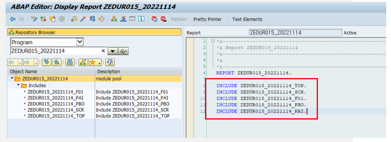

20221114 - MODULE POOL, INCLUDE
INCLUDE
ABAP 소스 코드를 개별 저장소 개체로 분할
- Library (모듈화)
INCLUDE 프로그램은 같은 소스 코드를 다른 프로그램에서 사용
- Order (순서, 가독성)
INCLUDE 프로그램은 복잡한 프로그램을 순서대로 정렬하여 뛰어난 가독성 제공
INCLUDE는 보통 프로그램 이름 뒤에 데이터 선언부, Selection-screen부, Subroutine부, PBO, PAI로 나누어 관리의 편의성 증대
INCLUDE ZPROGRAM_TOP
INCLUDE ZPROGRAM_SCR
INCLUDE ZPROGRAM_F01
INCLUDE ZPROGRAM_PBO
INCLUDE ZPROGRAM_PAI "O01특징
INCLUDE는 하나의 프로그램이지만, 독립적으로 실행 불가
INCLUDE 프로그램은 다른 프로그램 내에 내장 (Built in)
INCLUDE 프로그램은 또 다른 INCLUDE를 포함 가능
INCLUDE 프로그램은 자기 자신을 호출 불가
INCLUDE 프로그램은 parameter를 가지지 않는다
INCLUDE PROGRAM

TOP 선언부

SCREEN 선언부

DATA 선언부

SUB SCREEN 생성
CALL SCREEN SUB_SCREEN_NAME.
Attributes

Element list

PBO 생성


GUI STATUS 생성


EXIT COMMAND

- GUI STATUS 기능키 (Function Key)에 ‘E’
- 즉 EXIT COMMAND 설정
- MODULE에 USER_EXIT AT EXIT-COMMAND 생성
→ Function Key에 ‘E’ 명령어 들어왔을 때 AT EXIT-COMMAND가 있는 해당 모듈만 실행


ALV DISPLAY


PAI - USER COMMAND